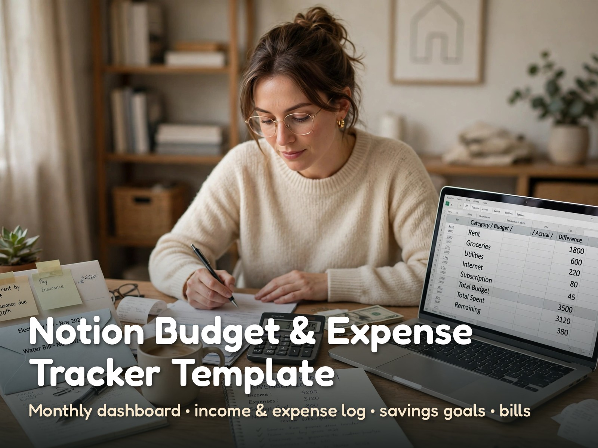

$15 USD — instant download
Notion Budget & Expense Tracker Template — Monthly Dashboard, Income & Expense Log, Savings Goals & Bills
Get it on GumroadMost budgets die in the second month — not because the numbers were wrong, but because the spreadsheet was annoying to open, the categories did not match real life, and one surprise bill quietly wrecked the plan. This template moves the whole system into Notion, where your notes already live: log an expense in seconds, watch the month fill in on the dashboard, and end the month with a review that turns what actually happened into next month's plan.
The monthly budget dashboard is one home page per month: income in, expenses out, what is left, and how each category tracks against its limit, visible at a glance. The income database logs every source of money with its date and a monthly total that feeds the dashboard. The expense log holds one row per expense — amount, date, payment method and a category property you can edit to match your life — filterable by category, by week, or by ‘where did that go?’ The savings goals tracker gives each goal a target, a deadline and a progress bar, and the bills and subscriptions tracker sorts recurring payments so the next due date is always on top: the forgotten subscription shows up before it charges you, not after.
Buy on Gumroad and download the PDF instantly. The PDF contains your template link: open it, click Duplicate in the top-right corner, and the whole system copies into your own Notion workspace — yours to edit, forever. You only need a free Notion account; everything in this template works on Notion's free plan, on phone, tablet and desktop. A getting-started page inside walks you through setup in minutes, so the template is working the same day you buy it.
The template suits young professionals and first-time budgeters whose money currently lives in a banking app and a vague feeling — anyone who has made a budget in January and abandoned it by February, and wants one that survives contact with a real month. The monthly review page uses a baseline-and-adjust method: compare planned against actual, find the two categories that drifted, and set next month's limits from your real baseline instead of an imaginary perfect month. This is an organization tool, not financial advice: it tracks what you earn and spend and helps you see it clearly, and nothing here replaces guidance from a qualified financial professional about your own situation.
This is a digital download — no physical item will be shipped. For personal use; please do not redistribute or resell the file.